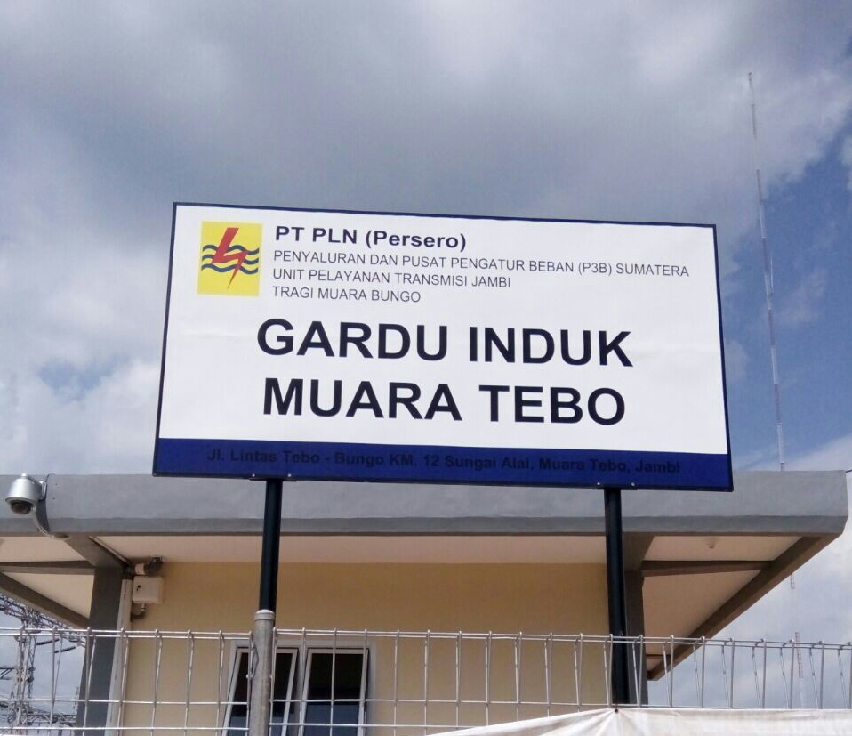

Berita
GI Muara Tebo 60 MVA Beroperasi, Perkuat Kelistrikan Di Sei Bengkal
Bagikan : facebook || twitter
Siaran pers || 11 Sep 2017

Muara Bungo, 11 September 2017 - Masyarakat Sei Bengkal di Muara Bungo Kabupaten Jambi, akhirnya bisa tersenyum menikmati listrik dengan kualitas yang lebih baik. Selama ini mereka hanya bisa merasakan defisit daya yang berdampak pada seringnya terjadi listrik padam.
Untuk menjadikan daerah ini bebas dari drop tegangan PLN di Rayon Tebo bersama dengan Unit Induk Pembangunan Sumbagsel menambah Gardu Induk (GI) Muara Tebo yang dioperasikan sejak akhir Agustus lalu. Upaya membuat masyarakat Muara Bungo tersenyum di Hari Pelanggan Nasional pun berhasil.
General Manager PLN Wilayah Sumatera Selatan Jambi dan Bengkulu (WS2JB), Daryono PW mengatakan melistriki Nusantara dan membuat Indonesia terang benderang sampai ke pelosok negeri merupakan tekad yang bulat bagi insan PLN. Kami tidak pernah berhenti untuk meningkatkan pelayanan kepada pelanggan, berbagai infrastruktur dibangun untuk mendukung kehandalan listrik sejalan dengan
perkembangan ekonomi daerah dan masyarakat, lanjut Daryono PW.
Tes pembebanan Gardu Induk dilaksanakan selama tiga hari serta pengalihan Tap travo tegangan 20 KV di sekitar Gardu Induk Tebo berjalan lancar. Trafo Daya dengan kapasitas 60 MVA ini dioperasikan dari Gardu Induk Tebo setelah dua tahun masa pembangunannya.
Dengan selesainya GI Muara Tebo, tegangan penyulang di Sei Bengkal yang sebelumnya sekitar 14,5 KV saat ini sudah bagus dan dinikmati oleh masyarakat.
Sebelumnya daerah ini dilayani dari GI Muara Bungo yang berjarak ± 52 km. Tidak hanya Sei Bengkal, dari Gardu Hubung Rayon Tebo secara sistem saat ini juga sudah melayani kota Tebo serta Pulau Tamiang yang berjarak ± 120 kms. Area Muara Bungo telah menyiapkan lima penyulang untuk melayani masyarakat Kabupaten Tebo.
Selain itu jaringan listrik yang dikerjakan oleh Lisdes di wilayah kerja Rayon Tebo, di triwulan tiga ini selesai dibangun, hal ini tentunya untuk melayani pelanggan baru yang sudah mendaftar sekitar 1.200 calon pelanggan.
Tepat di Hari Pelanggan Nasional bulan September 2017 ini PLN telah membuat masyarakat tersenyum, sesuai tema “Senyum Benderang Indonesia”, serta rencana peresmian GI Muara Tebo ini akan dilaksanakan pada moment hari jadi Kabupaten Tebo yang akan diselenggarakan pada bulan Oktober 2017, tutup Daryono PW.
Copyright©2020 PT. PLN (Persero) UPB Sumbagsel